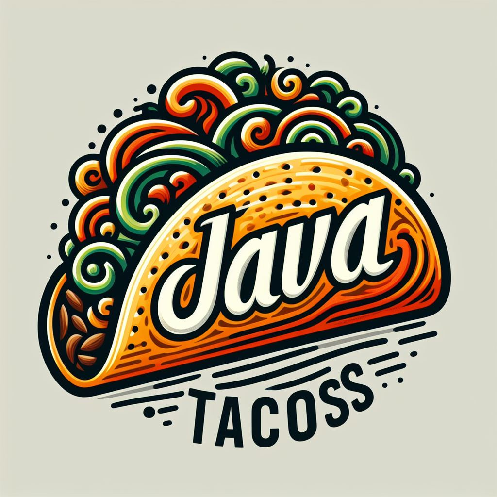
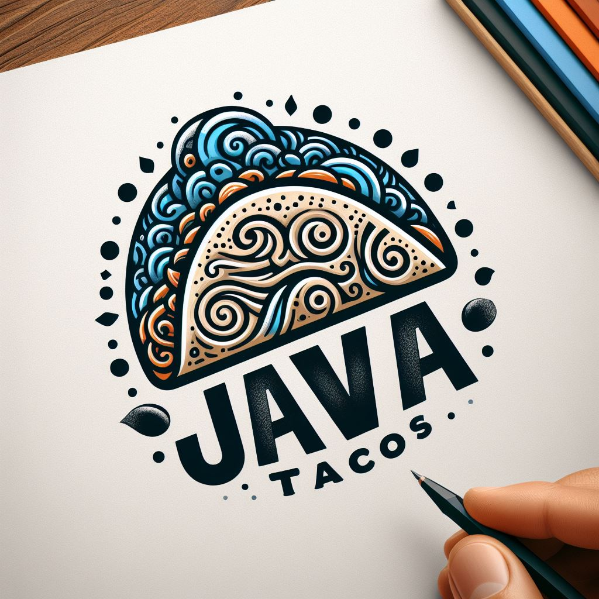

Bienvenid@ a JAVATACOS
"En 'JAVATACOS', combinamos el arte del desarrollo de software con el sabor auténtico de de un taco casero. ¡Porque nada inspira más a programar que un buen taco!"
Ofrecemos una variedad de tacos que satisfarán tanto a los amantes de la carne como a los entusiastas del código."
